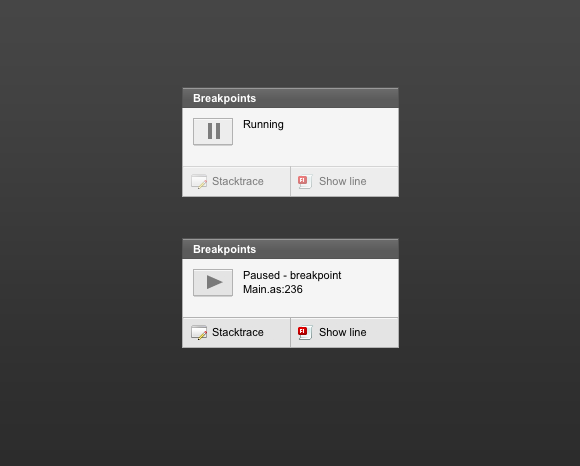
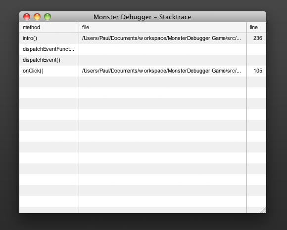
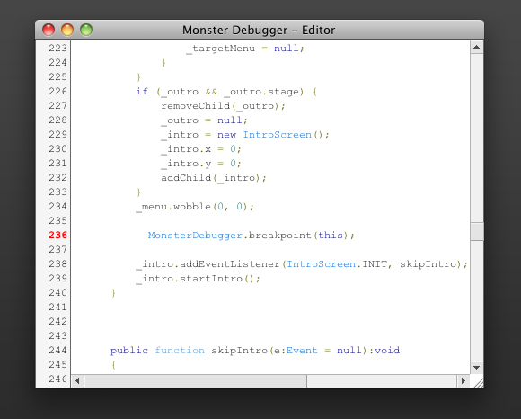

12. Breakpoints
From version 3 of the Monster Debugger there is support for a breakpoint system. Enabling them does require you to run your application in the Flash Debug Player or Adobe Debug Launcher (ADL). If you have the debug player running you can easily add breakpoint in your code using the following function:
MonsterDebugger.breakpoint(this);
When you run your code, you will notice that the Monster Debugger will pause your application once it reaches the breakpoint and display a notice of this event in the application window.
You have several options from here, you can hit the play button so the application will continue to run until it reaches another breakpoint, you can view the stack trace of the current breakpoint or you can open the ActionScript or MXML file with our build in viewer.
The viewer navigates you to the file and line number where the breakpoint was found to see what your code looks like.
By clicking the pause button you can also pause your application at any time, the stack trace and the viewer of the source code will not be available though with a manual pause.